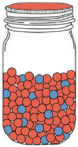
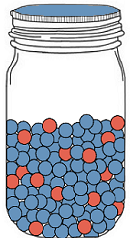
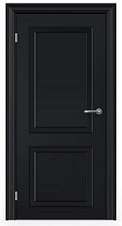

<!doctype html>
<html>
  <head>
  <title>Jars</title>
  <script src="./js/jquery.min.js"></script>
  <script src="./jspsych-6/jspsych.js"></script>
  <script src="./jspsych-6/plugins/jspsych-survey-multi-choice.js"></script>
	<script src="./jspsych-6/plugins/jspsych-html-button-response.js"></script>
  <script src="./jspsych-6/plugins/jspsych-survey-likert.js"></script>
  <script src="./jspsych-6/plugins/jspsych-survey-text.js"></script>
	<script src="./js/welcome.js"></script>
  <link href="./jspsych-6/css/jspsych.css" rel="stylesheet" type="text/css"></link>
  </head>

  <body>
	  <div id="welcome"></div>
  </body>

  <script>

/////////////////////////////// EXPERIMENT 1 ///////////////////////////////////////
// 2 (dependency: i, sq) vs. 2 (number informants: 3, 5, 7) between-subjects design
// prompt likelihood rating after each piece of testimony, and after own ball private evidence
////////////////////////////////////////////////////////////////////////////////////

// initialise timeline
var timeline = [];

// if participants get an instruction check question wrong, they will loop back to the previous instruction page
var introloop = [];
var introloop1 = [];
var introloop2 = [];
var introloop3 = [];

// generate a random turkcode
var turkcode = (Math.floor(Math.random() * 899999) + 100000).toString();

// specify images to preload
var images = ['img/closeddoor.jpg', 'img/redjar.png', 'img/bluejar.png','img/greyball.PNG', 'img/redball.PNG', 'img/blueball.PNG', 'img/attnCheck.JPG'];
jsPsych.pluginAPI.preloadImages(images);

// ------ Randomise variables ----- //
// informant distribution
var distribution = ['3-1', '5-1', '7-1'];
var distribution = jsPsych.randomization.sampleWithoutReplacement(distribution, 1)[0]; // randomly select 1 condition
// console.log(distribution);

switch (distribution) {     // based on informant distribution -> how many informants?
  case '3-1':
    var informants = '3';
    break;
  case '5-1':
    var informants = '5';
    break;
  default:
    var informants = '7';
    break;
};

// dependency of informants' testimony
var dependency = ['i', 'sq'];       // Independent, SeQuential
var dependency = jsPsych.randomization.sampleWithoutReplacement(dependency, 1)[0];   // randomise
// console.log(dependency);

// randomise pictures and names used to represent the friends
var friends = ['img/woman1.png', 'img/woman2.png', 'img/woman3.png', 'img/woman4.jpg', 'img/woman5.png', 'img/woman6.jpg', 'img/woman7.png'];
jsPsych.pluginAPI.preloadImages(friends);
var friends = jsPsych.randomization.sampleWithoutReplacement(friends, informants); // randomly select the appropriate number of images/names

var names = ["Sarah", "Mary", "Ann", "Emma", "Jane", "Claire", "Lucy"];
var names = jsPsych.randomization.sampleWithoutReplacement(names, informants);

// randomise colour of ball participant will see
var colour = ["red", "blue"];
var colourPart = jsPsych.randomization.shuffle(colour);
// console.log(colourPart[0]); // this is the colour ball the participant will see

/* function to start the jsPsych experiment */
function startExperiment(){

  jsPsych.data.addProperties({  // record these variables in the jsPsych data
    turkcode: turkcode,
    colourPart: colourPart[0],
    informants: informants,
    distribution: distribution,
    dependency: dependency,
    names: names
  });

  jsPsych.init({
    timeline: timeline,
    preload_images: images,
    on_finish: function() {
      endExperiment( jsPsych.data.get().csv(), function() { document.write('<div id="endscreen" class="endscreen" style="width:1000px"><div class="endscreen" style="text-align:center; border:0px solid; padding:10px; font-size:120%; width:800px; float:right"><p><br><br><br>All done!<br><br>Your completion code is <span id="turkcode" style="font-weight:bold;font-size:130%">' + turkcode + '</span>. To receive payment for the HIT, return to the Amazon Mechanical Turk page and enter this code. Please contact us if something goes wrong and we\'ll fix it as quickly as possible.</p></div></div>') })
    }
  });
};

/* save and finish */
function endExperiment(dataset,callback) {
 $.post('submit',{"content": dataset}); // uncomment to post data
 setTimeout(callback,1000)
};

/* change the display property of a set of objects */
function setDisplay(theClass, theValue) {
 var i, classElements = document.getElementsByClassName(theClass);
 for (i = 0; i < classElements.length; i = i + 1) {
  classElements[i].style.display = theValue;
 }
};

// ----------------- INSTRUCTIONS ------------------ //
var instructionsPreempt = {
  type: 'html-button-response',
  timing_post_trial: 0,
  button_html: '<button class="jspsych-btn" style="display:none">%choice%</button>',
  choices: ['Click here to begin'],
  on_start: function() {setTimeout(function(){setDisplay("jspsych-btn","")}, 7000)},
  is_html: true,
  stimulus: "The experiment will begin now.<br><br>The first few pages will show the instructions.<br>Make sure to read them carefully, as you will be asked questions to check that you understand them." +
  "<br><br>If you answer a question incorrectly, you will be taken back to the instructions page.<br><br>"
};
timeline.push(instructionsPreempt);

var instructions1 = {
  type: 'html-button-response',
  button_html: '<button class="jspsych-btn" style="display:none">%choice%</button>',
  choices: ['Click here to continue'],
  on_start: function() {setTimeout(function(){setDisplay("jspsych-btn","")}, 12000)},
  is_html: true,
  stimulus: "<p align='center'><table width=700 height=100% border=0><tr><td align=center valign=center>" +
    "</img></td><td align=center valign=center></img></td></tr></table>" +
    "Here is a red jar and a blue jar.<br><br>" +
    "As you can see, in the red jar, there are a lot of red balls and some blue balls.<br>Specifically, out of 120 balls in the red jar, 100 are red and 20 are blue.<br><br>" +
    "The opposite is true for the blue jar, in that out of 120 balls in the blue jar,<br>100 are blue and 20 are red.<br><br>"
};
introloop.push(instructions1); //push instructions to an introloop node

// create the 1st instruction check question
var instructQ1Answers = ["100/120 balls are red", "20/120 of balls are red",
                          "All balls are red", "100/120 balls are blue"];
var instructQ1Shuffled = jsPsych.randomization.shuffle(instructQ1Answers);
var correctString1 = '{"Q0":"' + instructQ1Answers [0] + '"}';
var instruct1Correct = false;
var instructQ1Check = {
  type: "survey-multi-choice",
  preamble: ["<p align='center'><b>Check your knowledge!</b></p>"],
  questions: [{prompt: "<b>Question:</b> In the red jar;",
              options: instructQ1Shuffled,
              required: true}],
  on_finish: function(data) {
    if(data.responses == correctString1) {instruct1Correct = true;}
  }
};
introloop.push(instructQ1Check);

// define the splash screen shown if participants answer incorrectly
var splash_screen1 = {
  type: 'html-button-response',
  button_html: '<button class="jspsych-btn">%choice%</button>',
  choices: ['Click here to read the instructions again'],
  on_start: function() {setTimeout(function(){setDisplay("jspsych-btn","")}, 500)},
  is_html: true,
  stimulus: 'Your answer was incorrect.'
};

// define an additional conditional that will only show the splash screen if the answer was wrong
var conditional_splash1 = {
  timeline: [splash_screen1],
  conditional_function: function(data) {return !instruct1Correct} // skip if correct
};
introloop.push(conditional_splash1);

// add the first instructions block + check question to a loop node
var loop_node = {
  timeline: introloop,
  loop_function: function(data) {return !instruct1Correct} // stop looping if correct
};
timeline.push(loop_node);

// ------- describe objective of experiment -------- //
var task = {
  type: 'html-button-response',
  button_html: '<button class="jspsych-btn" style="display:none">%choice%</button>',
  choices: ['Click here to continue'],
  on_start: function() {setTimeout(function() {setDisplay("jspsych-btn","")}, 7000)},
  is_html: true,
  stimulus: "<p align='center'><table width=700 height=100% border=0><tr><td align=center valign=center>" +
    "</img></td><td align=center valign=center></img></td></tr></table>" +
    "I will now randomly select one of these two jars (and I won't tell you which jar I picked).<br><br>" +
    "From that selected jar, I will randomly take one ball out to show you.<br><br>" +
    "Your task is to <strong>guess which of the two jars I selected.</strong><br><br>"
};
introloop2.push(task);

var instructQ3Answers = ["Guess which of the two jars I selected",
                        "Count how many balls are in the jar", "Make bets", "Paint a jar"];
var instructQ3Shuffled = jsPsych.randomization.shuffle(instructQ3Answers);
var correctString3 = '{"Q0":"' + instructQ3Answers [0] + '"}';

var instruct3Correct = false;
var instructQ3Check = {
  type: "survey-multi-choice",
  preamble: ["<p align='center'><b>Check your knowledge!</b></p>"],
  questions: [{prompt:"<b>Question:</b> Your task is to;",
              options: instructQ3Shuffled,
              required:true}],
  on_finish: function(data) {
      if(data.responses == correctString3) {instruct3Correct = true;}
    }
};
introloop2.push(instructQ3Check);

var conditional_splash3 = {
  timeline: [splash_screen1],
  conditional_function: function(data) {return !instruct3Correct} // skip if correct
};
introloop2.push(conditional_splash3);

var loop_node3 = {
  timeline: introloop2,
  loop_function: function(data) {return !instruct3Correct} // stop looping if correct
};
timeline.push(loop_node3);

// --------- introduce friends -------------------------- //
// this will show only the appropriate number of informants
var b;
var cells = ""; // create an empty string that will host the repeated string
var greyBalls = "";

for (b = 0; b < friends.length; b++) {  // replicate the images friends.length number of times
  var cell = ["<td align=center valign=center><strong>" + names[b+0] + "</strong><br /></img></td>"];
  var cells = cells + cell;
  var greyBall = ["</img>"];
  var greyBalls = greyBalls + greyBall;
};

// combines the appropriate number of informants together in a table
var introFriends = ["<table width=800 height=100% border=0><tr>" + cells + "</tr></table>" +
  "<p align='center'>Before I show you a ball, I've asked my " + informants + " friends to help you.<br><br>" +
  "I will randomly take one ball out of the selected jar for each of my friends, and show one ball to each friend.<br><br>" + greyBalls +
  "<br><br>After showing each ball, I will place it back in the jar before taking another one out for the next friend.<br><br>" +
  "Based on the ball they saw, each of my friends will make their best guess about which jar I selected."];

var instructFriends = {
  type: 'html-button-response',
  button_html: '<button class="jspsych-btn" style="display:none">%choice%</button>',
  choices: ['Click here to continue'],
  on_start: function() {setTimeout(function(){setDisplay("jspsych-btn","")}, 15000)},
  is_html: true,
  stimulus: introFriends
};
introloop1.push(instructFriends);

// dependency manipulation check
var instructQ2Answers = ["One different ball each", "The same ball"];
var instructQ2Shuffled = jsPsych.randomization.shuffle(instructQ2Answers);
var correctString2 = '{"Q0":"' + instructQ2Answers [0] + '"}';

var instruct2Correct = false;
var instructQ2Check = {
  type: "survey-multi-choice",
  preamble: ["<p align='center'><b>Check your knowledge!</b></p>"],
  questions: [{prompt:"<b>Question:</b> My friends will see;",
              options: instructQ2Shuffled,
              required:true}],
  on_finish: function(data) {
      if(data.responses == correctString2) {instruct2Correct = true;}
  }
};
introloop1.push(instructQ2Check);

var conditional_splash2 = {
  timeline: [splash_screen1],
  conditional_function: function(data) {return !instruct2Correct} // skip if correct
};
introloop1.push(conditional_splash2);

var loop_node2 = {
  timeline: introloop1,
  loop_function: function(data) {return !instruct2Correct} // stop looping if correct
};
timeline.push(loop_node2);

// continue introducing task
var instructBets = {
  type: 'html-button-response',
  button_html: '<button class="jspsych-btn" style="display:none">%choice%</button>',
  choices: ['Click here to continue'],
  on_start: function() {setTimeout(function(){setDisplay("jspsych-btn","")}, 11000)},
  is_html: true,
  stimulus: "<p align='center'><table width=700 height=100% border=0><tr><td align=center valign=center>" +
    "</img></td><td align=center valign=center></img></td></tr></table>" +
    "My friends will now tell you which jar they guess I selected, based on the ball they saw.<br><br>" +
    "Like you, my friends understand that the colour of the ball does not perfectly predict the colour of the jar<br>(that is, there is a small chance" +
    " of drawing a blue ball from the red jar, or a red ball from the blue jar).<br><br>Click the button to hear my friends' best guesses.<br><br>"
};
timeline.push(instructBets);

var rateLabels = ["0<br>Definitely the <font color=blue>blue</font> jar", "1",
                  "2", "3", "4", "5<br>Equally likely to be the blue jar or red jar",
                  "6", "7", "8", "9", "10<br>Definitely the <font color=red>red</font> jar"];

// --------------- Independent ------------------------------------ //
var d;
var doors = "";

for (d = 0; d < friends.length; d++) {   // show the appropriate number of doors
  var door = ["<td align=center valign=center><strong>" + names[0+d] + "</strong><br /></img></td>"];
  var doors = doors + door;
};

// for loop to show all informants' testimonies
// will end with 3, 5, or 7 informants (value of a)
var a;
for (a = 0; a < friends.length; a++) {
  var instructDoors = {
    type: 'html-button-response',
    button_html: '<button class="jspsych-btn">%choice%</button>',
    choices: ['Click here to hear ' + names[0+a] + '\'s guess'],
    on_start: function() {setTimeout(function(){setDisplay("jspsych-btn","")}, 1000)},
    is_html: true,
    stimulus: ["<table width=800 height=100% border=0><tr>" + doors + "</tr></table>Click the button to speak to " + names[0+a] + "."]
      };

  var bet = {
    type: 'html-button-response',
    button_html: '<button class="jspsych-btn" style="display:none">%choice%</button>',
    choices: ['Click here to continue'],
    on_start: function() {setTimeout(function(){setDisplay("jspsych-btn","")}, 5000)},
    is_html: true,
    stimulus: ["<table width=500 height=100% border=0><tr><td align=center valign=center>" +
      "<strong>" + names[0+a] + "</strong><br /></img></img></td></tr></table>" +
      "<p align='center'>\"I looked at my ball and I guess the <font color=" + colourPart[1] + ">" +
      colourPart[1] + "</font> jar was selected.<br><br>" +
      "I have not talked to the others, nor did I see any of the balls given to the others.\"</p>"]
  };

  var rate = {
    type: 'survey-likert',
    questions: [{prompt:"<p style=text-align:center>Based on the guess(es) so far,<br>" +
                "how likely is it that the selected jar was the blue jar or the red jar?",
                labels: rateLabels,
                required: true}],
    preamble: ["<font color=white>Q" + [a+1] + "</font>"]
  };

  if (dependency == 'i') {   // only display/continue this loop in the i condition
    timeline.push(instructDoors);
    timeline.push(bet);
    timeline.push(rate);
  };
};

// ------------ Sequential ------------- //
var p;
var pics = "";

for (p = 0; p < friends.length; p++) {
  var pic = ["<td align=center valign=center><strong>" + names[0+p] + "</strong><br /></img></img></td>"];
  var pics = pics + pic;
};

var buttonText = ["Click to continue"];

var seq1 = {
  type: 'html-button-response',
  button_html: '<button class="jspsych-btn" style="display:none">%choice%</button>',
  choices: ['Click the button to hear ' + names[0] + '\'s guess.'],
  on_start: function() {setTimeout(function(){setDisplay("jspsych-btn","")}, 2000)},
  is_html: true,
  stimulus: ["<table width=800 height=100% border=0><tr>" + pics + "</tr></table>"]
};

var iLooked = ["<td align=center valign=center>\"I looked at my ball "];
var iGuess = ["<strong>I guess the <font color=" + colourPart[1] + ">" + colourPart[1] + "</font> jar was selected.</strong><br>I did not see any of the balls given to the others.\"</td>"]

// 1st informant
var seqFriend1 = {
  type: 'html-button-response',
  button_html: '<button class="jspsych-btn" style="display:none">%choice%</button>',
  choices: buttonText,
  on_start: function() {setTimeout(function(){setDisplay("jspsych-btn","")}, 5000)},
  is_html: true,
  stimulus: "<table width=900 height=100% border=0><tr>" + pics + "</tr>" +
   iLooked + "and " + iGuess + " </tr></table>"
};

// 2nd informant
var seqFriend2 = {
  type: 'html-button-response',
  button_html: '<button class="jspsych-btn" style="display:none">%choice%</button>',
  choices: buttonText,
  on_start: function() {setTimeout(function(){setDisplay("jspsych-btn","")}, 6000)},
  is_html: true,
  stimulus: "<table width=900 height=100% border=0><tr>" + pics + "</tr><tr>" +
   iLooked + "and " + iGuess +
   iLooked + "<i>and</i> I thought about what " + names[0] + " said.<br>" + iGuess + "</tr></table>"
};

// 3rd informant
if (informants == '3') {
  var seqFriend3Button = ['Click here to continue']; // if 3rd = last informant
} else {
  var seqFriend3Button = ['Click the button to hear ' + names[3] + '\'s guess.']; // if 3rd x=x last informant
};

var seqFriend3 = {
  type: 'html-button-response',
  button_html: '<button class="jspsych-btn" style="display:none">%choice%</button>',
  choices: buttonText,
  on_start: function() {setTimeout(function(){setDisplay("jspsych-btn","")}, 6000)},
  is_html: true,
  stimulus: "<table width=900 height=100% border=0><tr>" + pics + "</tr>" +
    iLooked + "and " + iGuess +
    iLooked + "<i>and</i> I thought about what " + names[0] + " said.<br>" + iGuess +
    iLooked + "<i>and</i> I thought about what " + names[0] + " and " + names[1] + " said.<br>" + iGuess + "</tr></table>"
};

// 4th informant
var seqFriend4 = {
  type: 'html-button-response',
  button_html: '<button class="jspsych-btn" style="display:none">%choice%</button>',
  choices: buttonText,
  on_start: function() {setTimeout(function(){setDisplay("jspsych-btn","")}, 6000)},
  is_html: true,
  stimulus: "<table width=900 height=100% border=0><tr>" + pics + "</tr>" +
    iLooked + "and " + iGuess +
    iLooked + "<i>and</i> I thought about what " + names[0] + " said.<br>" + iGuess +
    iLooked + "<i>and</i> I thought about what " + names[0] + " and " + names[1] + " said.<br>" + iGuess +
    iLooked + "<i>and</i> I thought about what " + names[0] + ", " + names[1] + ", and " + names[2] + " said.<br>" + iGuess + "</tr></table>"
};

var seqFriend5 = {
  type: 'html-button-response',
  button_html: '<button class="jspsych-btn" style="display:none">%choice%</button>',
  choices: buttonText,
  on_start: function() {setTimeout(function(){setDisplay("jspsych-btn","")}, 6000)},
  is_html: true,
  stimulus: "<table width=900 height=100% border=0><tr>" + pics + "</tr>" +
    iLooked + "and " + iGuess +
    iLooked + "<i>and</i> I thought about what " + names[0] + " said.<br>" + iGuess +
    iLooked + "<i>and</i> I thought about what " + names[0] + " and " + names[1] + " said.<br>" + iGuess +
    iLooked + "<i>and</i> I thought about what " + names[0] + ", " + names[1] + ", and " + names[2] + " said.<br>" + iGuess +
    iLooked + "<i>and</i> I thought about what " + names[0] + ", " + names[1] + ", " + names[2] + ", and " + names[3] + " said.<br>" + iGuess + "</tr></table>"
};

// 6th informant
var seqFriend6 = {
  type: 'html-button-response',
  button_html: '<button class="jspsych-btn" style="display:none">%choice%</button>',
  choices: buttonText,
  on_start: function() {setTimeout(function(){setDisplay("jspsych-btn","")}, 6000)},
  is_html: true,
  stimulus: "<table width=1000 height=100% border=0><tr>" + pics + "</tr>" +
    iLooked + "and " + iGuess +
    iLooked + "<i>and</i> I thought about what " + names[0] + " said.<br>" + iGuess + "               " +
    iLooked + "<i>and</i> I thought about what " + names[0] + " and " + names[1] + " said.<br>" + iGuess + "               " +
    iLooked + "<i>and</i> I thought about what " + names[0] + ", " + names[1] + ", and " + names[2] + " said.<br>" + iGuess +
    iLooked + "<i>and</i> I thought about what " + names[0] + ", " + names[1] + ", " + names[2] + ", and " + names[3] + " said.<br>" + iGuess +
    iLooked + "<i>and</i> I thought about what " + names[0] + ", " + names[1] + ", " + names[2] + ", " + names[3] + ", and " + names[4] + " said.<br>" + iGuess + "</tr></table>"
};

// 7th informant
var seqFriend7 = {
  type: 'html-button-response',
  button_html: '<button class="jspsych-btn" style="display:none">%choice%</button>',
  choices: buttonText,
  on_start: function() {setTimeout(function(){setDisplay("jspsych-btn","")}, 6000)},
  is_html: true,
  stimulus: "<table width=1000 height=100% border=0><tr>" + pics + "</tr>" +
    iLooked + "and " + iGuess +
    iLooked + "<i>and</i> I thought about what " + names[0] + " said.<br>" + iGuess +
    iLooked + "<i>and</i> I thought about what " + names[0] + " and " + names[1] + " said.<br>" + iGuess +
    iLooked + "<i>and</i> I thought about what " + names[0] + ", " + names[1] + ", and " + names[2] + " said.<br>" + iGuess +
    iLooked + "<i>and</i> I thought about what " + names[0] + ", " + names[1] + ", " + names[2] + ", and " + names[3] + " said.<br>" + iGuess +
    iLooked + "<i>and</i> I thought about what " + names[0] + ", " + names[1] + ", " + names[2] + ", " + names[3] + ", and " + names[4] + " said.<br>" + iGuess +
    iLooked + "<i>and</i> I thought about what " + names[0] + ", " + names[1] + ", " + names[2] + ", " + names[3] + ", " + names[4] + ", and " + names[5] + " said.<br>" + iGuess + "</tr></table>"
};

var rateSeq1 = {
  type: 'survey-likert',
  questions: [{prompt:"<p style=text-align:center>Based on the guess(es) so far,<br>" +
              "how likely is it that the selected jar was the blue jar or the red jar?",
              labels: rateLabels,
              required: true}],
  preamble: ["<font color=white>Q1</font>"],
  button_label: ['Click the button to hear ' + names[1] + '\'s guess.']
};
var rateSeq2 = {
  type: 'survey-likert',
  questions: [{prompt:"<p style=text-align:center>Based on the guess(es) so far,<br>" +
              "how likely is it that the selected jar was the blue jar or the red jar?",
              labels: rateLabels,
              required: true}],
  preamble: ["<font color=white>Q2</font>"],
  button_label: ['Click the button to hear ' + names[2] + '\'s guess.']
};

if (informants == '3') {
  var seqFriend3Button = ['Click here to continue']; // if 3rd = last informant
} else {
  var seqFriend3Button = ['Click the button to hear ' + names[3] + '\'s guess.']; // if 3rd x=x last informant
};

var rateSeq3 = {
  type: 'survey-likert',
  questions: [{prompt:"<p style=text-align:center>Based on the guess(es) so far,<br>" +
              "how likely is it that the selected jar was the blue jar or the red jar?",
              labels: rateLabels,
              required: true}],
  preamble: ["<font color=white>Q3</font>"],
  button_label: seqFriend3Button
};
var rateSeq4 = {
  type: 'survey-likert',
  questions: [{prompt:"<p style=text-align:center>Based on the guess(es) so far,<br>" +
              "how likely is it that the selected jar was the blue jar or the red jar?",
              labels: rateLabels,
              required: true}],
  preamble: ["<font color=white>Q4</font>"],
  button_label: ['Click the button to hear ' + names[4] + '\'s guess.']
};

if (informants == '5') {
  var seqFriend5Button = ['Click here to continue']; // if 5th = last informant
} else {
  var seqFriend5Button = ['Click the button to hear ' + names[5] + '\'s guess.']; // if 5th x=x last informant
};

var rateSeq5 = {
  type: 'survey-likert',
  questions: [{prompt:"<p style=text-align:center>Based on the guess(es) so far,<br>" +
              "how likely is it that the selected jar was the blue jar or the red jar?",
              labels: rateLabels,
              required: true}],
  preamble: ["<font color=white>Q5</font>"],
  button_label: seqFriend5Button
};
var rateSeq6 = {
  type: 'survey-likert',
  questions: [{prompt:"<p style=text-align:center>Based on the guess(es) so far,<br>" +
              "how likely is it that the selected jar was the blue jar or the red jar?",
              labels: rateLabels,
              required: true}],
  preamble: ["<font color=white>Q6</font>"],
  button_label: ['Click the button to hear ' + names[6] + '\'s guess.']
};
var rateSeq7 = {
  type: 'survey-likert',
  questions: [{prompt:"<p style=text-align:center>Based on the guess(es) so far,<br>" +
              "how likely is it that the selected jar was the blue jar or the red jar?",
              labels: rateLabels,
              required: true}],
  preamble: ["<font color=white>Q7</font>"],
  button_label: buttonText
};

// ------- push to timeline for different dependency conditions ------- //
// independent condition is already dealt with, within the code for i condition
if (dependency == 'sq') {
  timeline.push(seq1);
  timeline.push(seqFriend1);
  timeline.push(rateSeq1);
  timeline.push(seqFriend2);
  timeline.push(rateSeq2);
  timeline.push(seqFriend3);
  timeline.push(rateSeq3);
  if (informants != '3') {
    timeline.push(seqFriend4);
    timeline.push(rateSeq4);
    timeline.push(seqFriend5);
    timeline.push(rateSeq5);
  };
  if (informants == '7') {
    timeline.push(seqFriend6);
    timeline.push(rateSeq6);
    timeline.push(seqFriend7);
    timeline.push(rateSeq7);
  };
};

// ------ show participant their own ball ------- //
var show = {
  type: 'html-button-response',
  button_html: '<button class="jspsych-btn" style="display:none">%choice%</button>',
  choices: ['Click here to see your ball'],
  on_start: function() {setTimeout(function(){setDisplay("jspsych-btn","")}, 5000)},
  is_html: true,
  stimulus: ["I have replaced all the balls back into the jar.<br><br>I will now randomly take one ball from the selected jar, and show you this ball.<br><br>"]
};
timeline.push(show);

var showBall = {
  type: 'html-button-response',
  button_html: '<button class="jspsych-btn" style="display:none">%choice%</button>',
  choices: ['Click here to continue'],
    on_start: function() {setTimeout(function(){setDisplay("jspsych-btn","")}, 5000)},
  is_html: true,
  stimulus: "<p align='center'>Here is your ball.</p></img>"
};
timeline.push(showBall);

// -------- elicit jar choice from participant ------- //
var rateFinal = {
  type: 'survey-likert',
  questions: [{prompt:"<p style=text-align:center>Based on my friends' guesses and the ball you saw,<br>" +
              "how likely is it that the selected jar was the blue jar or the red jar?",
              labels: rateLabels,
              required: true}],
  preamble: ["<font color=white>Q_final</font>"]
};
timeline.push(rateFinal);

// --------- ask manipulation check question ------- //
var manipCheck = {
  type: 'html-button-response',
  button_html: '<button class="jspsych-btn" style="display:none">%choice%</button>',
  choices: ['Click here to continue'],
  on_start: function() {setTimeout(function() {setDisplay("jspsych-btn","")}, 2000)},
  is_html: true,
  stimulus: ["<p style=text-align:center>Thanks, you're nearly done.<br><br>" +
            "Just 1 more question to check your memory<br>" +
            "for what you saw during the experiment.<br>"]
};
timeline.push(manipCheck);

var manipCheckQ = {
  type: "survey-multi-choice",
  preamble: [""],
  questions: [{prompt:"You saw " + informants + " friends make guesses about which jar was selected.<br>" +
                      "Which of these statements about those guesses is most accurate?",
              options: ["The " + informants + " friends did not hear the other friends’ guesses and did not see the balls given to the other friends",
                        "The " + informants + " friends could hear the other friends’ guesses but did not see the balls given to the other friends",
                        "The " + informants + " friends could hear the other friends’ guesses and could also see the balls given to the other friends",
                        "The " + informants + " friends saw a single ball and then agreed on the best guess"],
              required:true}],
};
timeline.push(manipCheckQ);
	  
// --------- finish with attention check question --- //
var attnCheck = {
  type: 'survey-text',
  questions: [{prompt: ""}],
  preamble: ["<div class = 'center-content'></img>"]
};
timeline.push(attnCheck);

// start by running the "welcome" //
welcome.run()

  </script>
</html>
